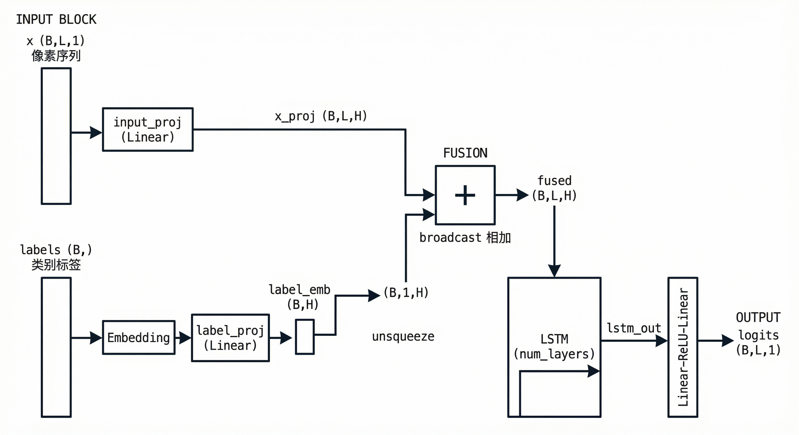
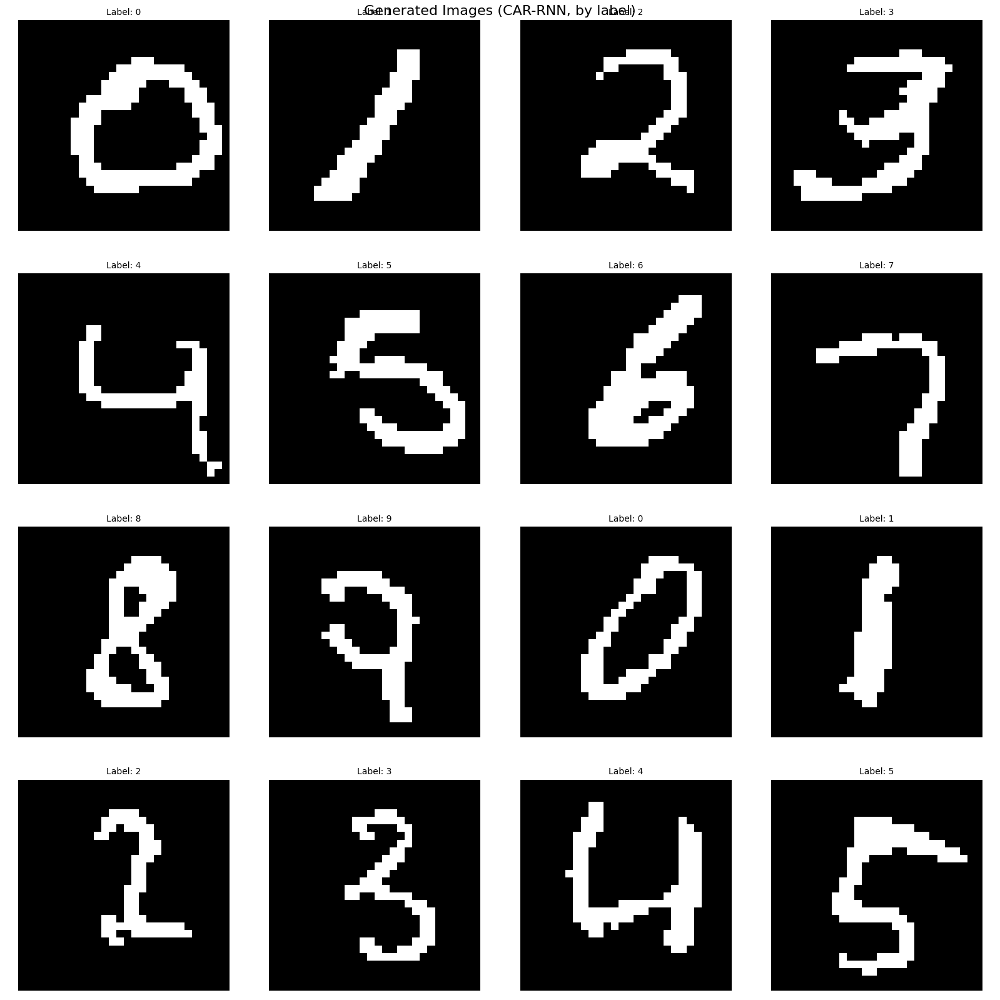

自回归（AR）模型通过链式法则将联合分布分解为 \(p(x) = \prod_{t=1}^T p(x_t \mid x_{<t})\)，可结合 RNN、CNN、Transformer 等架构实现序列生成。标准 AR 模型从历史序列 \(x_{<t}\) 预测下一个元素 \(x_t\)，生成的内容取决于模型学习到的数据分布。
然而，在需要可控生成的任务中，传统 AR 显得力不从心:
无法控制生成内容:标准 AR 从序列历史 \(x_{<t}\) 预测 \(x_t\)，生成过程仅依赖已生成部分，无法指定生成特定类别的样本。例如，在 MNIST 上无法控制生成数字“7”的图像，只能随机生成任意数字。
为了增强 AR 的灵活性和可控性，提出了条件自回归模型（Conditional Autoregressive Model, CAR）。CAR 允许在生成过程中加入额外条件 \(c\)（如类别标签、文本前缀等），实现可控的序列生成。
核心思想:在 AR 的基础上引入条件变量 \(c\)，将目标从建模 \(p(x)\) 改为建模 \(p(x \mid c)\)。通过指定条件 \(c\) 来指导模型生成符合该条件的序列。
无条件 AR: - 目标分布:\(p(x)\) - 分解:\(p(x) = \prod_{t=1}^T p(x_t \mid x_{<t})\) - 网络输入:\(x_{<t}\)
条件 AR（CAR）: - 目标分布:\(p(x \mid c)\) - 分解:\(p(x \mid c) = \prod_{t=1}^T p(x_t \mid x_{<t}, c)\) - 网络输入:\(x_{<t}\) 和 \(c\)
在 CAR 中，条件 \(c\) 需要加入到网络的每一步预测中，使 \(p_\theta(x_t \mid x_{<t}, c)\) 同时依赖历史与条件。
网络输入: - 历史序列:\(x_{<t} = (x_1, \ldots, x_{t-1})\) - 条件:\(c\)（对所有时间步共享且不变）
实现方式因架构而异: - RNN:将 \(c\) 的嵌入加到每步的输入特征上，或作为初始隐藏状态 - CNN:将 \(c\) 的嵌入 broadcast 并与中间特征相加（参考 cddpm） - Transformer:将 \(c\) 编码为前缀 token 或通过 cross-attention 引入
✅ 关键:条件 \(c\) 对所有时间步共享，不随时间变化，满足 \(p(x_t \mid x_{<t}, c)\) 的建模形式。
条件变量 \(c\) 通常是离散标签（如 MNIST 的 0~9），需要转换为数值向量才能输入神经网络。与 CGAN、CVAE、CDDPM 等类似，常见方式有:
方式 1:One-Hot 编码 - 类别 \(k\) → \([0, \ldots, 1, \ldots, 0]\)（第 \(k\) 位为 1） - 优点:简单，无额外参数 - 缺点:维度等于类别数，无法学习类别语义
方式 2:Embedding 编码（本实现采用） - 使用 nn.Embedding(num_labels, label_embed_dim) 将类别索引映射为可学习向量 - 优点:维度可自定义，可学习类别间的语义关系 - 缺点:需额外可学习参数
CAR 的目标是最大化条件对数似然:
\[\mathcal{L}(\theta) = \mathbb{E}_{(x, c) \sim \mathcal{D}} \left[ \log p_\theta(x \mid c) \right] = \mathbb{E}_{(x, c)} \left[ \sum_{t=1}^T \log p_\theta(x_t \mid x_{<t}, c) \right]\]
训练（条件 Teacher Forcing）: - 使用真实历史 \(x_{<t}\) 作为输入（非模型生成） - 条件 \(c\) 来自数据集（如类别标签） - 梯度可并行计算（因输入已知）
| 项目 | 无条件 AR | 条件 AR（CAR） |
|---|---|---|
| 目标分布 | \(p(x)\) | \(p(x \mid c)\) |
| 分解形式 | \(\prod_t p(x_t \mid x_{<t})\) | \(\prod_t p(x_t \mid x_{<t}, c)\) |
| 网络输入 | \(x_{<t}\) | \(x_{<t}\) 和 \(c\) |
| 应用场景 | 无监督生成 | 可控生成（指定类别等） |
生成过程为递归采样，每步依赖历史与固定条件 \(c\):
x = []
for t in range(1, T+1):
p_xt = model(x[:t-1], c) # p(x_t | x_{<t}, c)
x_t = sample(p_xt)
x.append(x_t)下面以 MNIST 条件生成为例，给出基于 RNN 的 CAR 实现。架构参考 cddpm 的条件注入方式:使用 nn.Embedding 将标签嵌入，再与特征相加。

图 3.1 CAR_RNN 网络架构图:标签经 Embedding 后与序列特征相加，再经 LSTM 与输出层预测下一像素
class CAR_RNN(nn.Module):
"""条件自回归 RNN 模型，用于条件生成 MNIST 图像
在 AR_RNN (LSTM) 基础上增加标签条件:
1. 使用 nn.Embedding 将类别标签嵌入为向量
2. 将标签嵌入加到每步的输入特征上，实现条件控制
"""
def __init__(self, input_dim=1, hidden_dim=256, num_layers=2, dropout=0.2,
num_labels=10, label_embed_dim=None):
super().__init__()
if label_embed_dim is None:
label_embed_dim = hidden_dim
self.label_emb = nn.Embedding(num_labels, label_embed_dim)
if label_embed_dim != hidden_dim:
self.label_proj = nn.Linear(label_embed_dim, hidden_dim)
else:
self.label_proj = nn.Identity()
self.input_proj = nn.Linear(input_dim, hidden_dim)
self.lstm = nn.LSTM(hidden_dim, hidden_dim, num_layers=num_layers,
dropout=dropout if num_layers > 1 else 0, batch_first=True)
self.output = nn.Sequential(
nn.Linear(hidden_dim, hidden_dim), nn.ReLU(),
nn.Linear(hidden_dim, input_dim)
)标签嵌入 broadcast 到序列各位置，与输入特征相加:
def forward(self, x, labels):
x_proj = self.input_proj(x) # (B, L, hidden_dim)
label_emb = self.label_emb(labels) # (B, label_embed_dim)
label_emb = self.label_proj(label_emb) # (B, hidden_dim)
label_emb = label_emb.unsqueeze(1) # (B, 1, hidden_dim)
x_proj = x_proj + label_emb # broadcast 到 (B, L, hidden_dim)
lstm_out, _ = self.lstm(x_proj)
return self.output(lstm_out) # (B, L, input_dim) Logits每步将标签嵌入加到当前输入特征上，配合 hidden_state 传递历史:
def generate(self, batch_size=1, seq_len=784, labels=None, device='cpu', temperature=1.0):
if labels is None:
labels = torch.randint(0, self.num_labels, (batch_size,), device=device)
label_emb = self.label_emb(labels)
label_emb = self.label_proj(label_emb) # (B, hidden_dim)
generated_seq = torch.zeros(batch_size, seq_len, self.input_dim, device=device)
hidden_state = None
for t in range(1, seq_len):
last_pixel = generated_seq[:, t-1:t, :]
current_feature = self.input_proj(last_pixel)
current_feature = current_feature + label_emb.unsqueeze(1) # 注入条件
lstm_out, hidden_state = self.lstm(current_feature, hidden_state)
logits = self.output(lstm_out[:, -1, :])
next_pixel = torch.bernoulli(torch.sigmoid(logits / temperature))
generated_seq[:, t, :] = next_pixel
return generated_seq, labels与无条件 AR 相同，二值像素使用 BCEWithLogits:
def loss_function(pred, target):
return F.binary_cross_entropy_with_logits(pred.reshape(-1), target.reshape(-1))训练时，forward 需传入 (x, labels)，其中 labels 来自数据集的类别标注。
核心思想:CAR 将无条件自回归 \(p(x) = \prod_t p(x_t \mid x_{<t})\) 拓展为条件自回归 \(p(x \mid c) = \prod_t p(x_t \mid x_{<t}, c)\)，通过引入外部条件 \(c\) 实现可控生成。
条件 \(c\) 将边缘分布 \(p(x)\) 分解为条件分布 \(p(x \mid c)\)，使得生成过程可按需控制，广泛应用于 class-conditional Image GPT、prompt-based 文本生成、text-to-speech 等任务。
在 MNIST 数据集上训练 CAR_RNN 后，按指定标签 \(c \in \{0, 1, \ldots, 9\}\) 生成数字图像。下图展示了条件生成的样例:每张图上方标注对应的 Label，可见模型能够根据标签生成相应类别的数字。

图 3.2 CAR_RNN 条件生成结果:按指定标签（0~9）生成的 MNIST 数字图像
CAR 实现了可控生成:在 AR 基础上引入条件 \(c\)，将建模目标从 \(p(x)\) 拓展为 \(p(x \mid c)\)，可通过指定类别标签生成对应样本，解决了无条件 AR 无法控制生成内容的问题。
条件注入方式简洁:采用 Embedding 编码标签，并将标签嵌入与序列特征相加（broadcast），与 CDDPM、CGAN 等条件生成模型的做法一致，实现简单且有效。
训练与推理高效:训练时使用条件 Teacher Forcing，梯度可并行计算；推理时逐像素自回归采样，每步依赖历史与固定条件 \(c\)，在 Transformer 等架构下还可通过 KV Cache 等方式加速。
适用场景广泛:CAR 可用于 class-conditional 图像生成、prompt-based 文本生成、text-to-speech 等多类可控生成任务，是自回归建模范式的重要扩展。